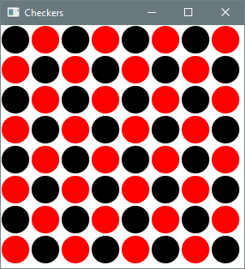

6.4 Nested Loops
Key terms: nested loop
6.4.1 Basic Concepts
A nested loop is one contained in the body of another loop. One common use of such a structure
is to output tabular data. The code below outputs a 5 x 7 multiplication table. The outer loop
control variable (i) ranges from 1 to 5. For each value of i, the inner loop control variable
(j) ranges from 1 to 7, printing the product of i and j at each step. The second call to
println is part of the outer loop body — it outputs a newline character at the end of each row of
the table. This process is depicted by the flowchart in Figure 6.4.1.
for (int i = 1; i <= 5; i++) {
for (int j = 1; j <= 7; j++) {
System.out.printf("%3d", i * j);
}
System.out.println();
}
Output
1 2 3 4 5 6 7
2 4 6 8 10 12 14
3 6 9 12 15 18 21
4 8 12 16 20 24 28
5 10 15 20 25 30 35
Figure 6.4.1: Flowchart
{kind=link}
6.4.2 Case Study: Winning Combinations
The simplicity of the Sum Game made it ideal for introducing the concept of a Monte Carlo simulation in Section 6.3.1. However, the probability can be calculated directly and exactly by enumerating all three-die combinations and counting those that satisfy the winning criterion. Listing 6.4.2 performs this task using three nested loops, each iterating over the possible values of one die.
Listing 6.4.2 - SumGame.java
package chap06.sect4;
/**
* Calculates the exact rounded probability of winning the Sum Game. In this game, the player rolls
* three dice and wins if one of the rolled numbers equals the sum of the other two.
*
* @author Drue Coles
*/
public class SumGame {
public static void main(String[] args) {
System.out.println("Calculating the probability of winning the Sum Game...");
final int sides = 6;
int winningRolls = 0;
for (int d1 = 1; d1 <= sides; d1++) {
for (int d2 = 1; d2 <= sides; d2++) {
for (int d3 = 1; d3 <= sides; d3++) {
if (d1 == d2 + d3 || d2 == d1 + d3 || d3 == d1 + d2) {
winningRolls++;
}
}
}
}
final int totalRolls = sides * sides * sides;
double probability = (double) winningRolls / totalRolls;
System.out.printf("Number of winning rolls: %d %n", winningRolls);
System.out.printf("Number of possible rolls: %d %n", totalRolls);
System.out.printf("Probability of winning: %.4f %n", probability);
}
}
Output 6.4.2
Calculating the probability of winning the Sum Game...
Number of winning rolls: 45
Number of possible rolls: 216
Probability of winning: 0.2083
For a visual trace of the nested looping, the program could be modified to output each three-die combination as it occurs:
for (int d3 = 1; d3 <= sides; d3++) {
System.out.printf("%n %d-%d-%d", d1, d2, d3); // output current combination
if (d1 == d2 + d3 || d2 == d1 + d3 || d3 == d1 + d2) {
winningRolls++;
System.out.println(" ★"); // mark winning combination
}
}
Partial Output of Code Fragment
1-1-1
1-1-2 ★
1-1-3
1-1-4
1-1-5
1-1-6
1-2-1 ★
1-2-2
1-2-3 ★
1-2-4
6.4.3 Case Study: Drawing a Checkerboard
The graphics application in Listing 6.4.3 uses nested loops to draw a board filled with alternating red and black checkers. The outer loop repeats once for each row of the board. Within a row, the inner loop repeats once for each column. Each (row, column) combination is checked to determine the correct color of the corresponding checker.
Listing 6.4.3 - Checkers.java
package chap06.sect4;
import javafx.application.Application;
import javafx.scene.Scene;
import javafx.scene.layout.Pane;
import javafx.scene.paint.Color;
import javafx.scene.shape.Circle;
import javafx.stage.Stage;
/**
* Draws a grid of black and red checkers.
*
* @author Drue Coles
*/
public class Checkers extends Application {
@Override
public void start(Stage stage) {
final int size = 300;
final int numRows = 8;
final int numCols = 8;
final int diameter = size / numRows;
final int radius = diameter / 2;
Pane root = new Pane();
Scene scene = new Scene(root, size, size);
for (int row = 0; row < numRows; row++) {
for (int col = 0; col < numCols; col++) {
// pixel coordinates of circle in position (row, col)
int x = radius + col * diameter;
int y = radius + row * diameter;
Color color = (row % 2 == col % 2 ? Color.BLACK : Color.RED);
Circle circle = new Circle(x, y, radius - 1, color);
root.getChildren().add(circle);
}
}
stage.setTitle("Checkers");
stage.setScene(scene);
stage.show();
}
public static void main(String[] args) {
launch(args);
}
}
Output 6.4.3
